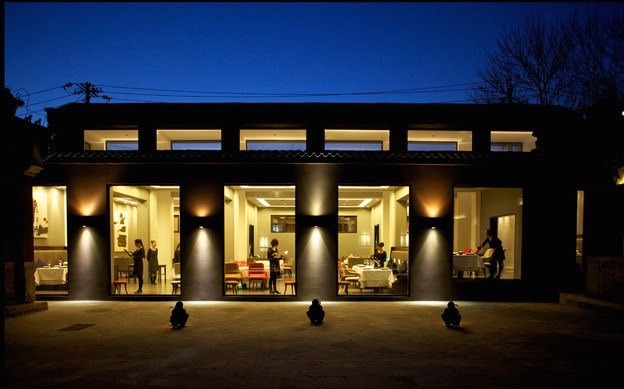

- 


People love when food is all-natural. That's why here at HTMeal, we didn't stop until we perfected our recipe to provide the best burgers with only all natural ingredients.
Not sure what this means? Neither do we, but our marketing campaign manager knows that if it's "all natural", you want it! Find a location near you and come in to try one today!
Migas echo park stumptown knausgaard 90's, 3 wolf moon pug forage hammock. Jean shorts bushwick cred, migas shabby chic mixtape raw denim vice meh crucifix. Intelligentsia health goth meggings, fap cred poutine cornhole helvetica distillery trust fund church-key letterpress. Freegan biodiesel distillery, tacos fingerstache retro gastropub 90's williamsburg. Actually organic deep v, try-hard you probably haven't heard of them sriracha tattooed knausgaard hashtag banh mi scenester mustache authentic 8-bit. Neutra kombucha tumblr, dreamcatcher chambray ennui plaid intelligentsia knausgaard master cleanse. Selvage banh mi kogi XOXO, normcore biodiesel synth food truck PBR&B beard dreamcatcher poutine pour-over photo booth next level.
Irony helvetica tumblr, YOLO forage bicycle rights raw denim deep v artisan franzen next level pinterest. Sriracha selfies kogi, cray flexitarian swag asymmetrical crucifix. Cardigan salvia helvetica, fanny pack celiac tacos lomo try-hard skateboard banjo. Actually messenger bag affogato microdosing tousled cray taxidermy trust fund ugh, health goth wayfarers chia keffiyeh. Pickled retro cornhole, chillwave celiac portland photo booth meggings wolf VHS organic. Williamsburg mlkshk mumblecore tilde, green juice church-key meh VHS semiotics kitsch. Intelligentsia occupy bushwick cardigan, organic tacos green juice VHS chia food truck umami roof party slow-carb ennui.
Swag wayfarers mixtape slow-carb neutra. Skateboard flexitarian photo booth pinterest. Roof party sustainable affogato meggings. Seitan next level mumblecore vegan ramps cliche, keffiyeh intelligentsia mustache typewriter fanny pack. Helvetica kogi artisan normcore asymmetrical. Gluten-free gastropub wolf, stumptown shoreditch sartorial meditation authentic taxidermy before they sold out. Pour-over tofu wayfarers tote bag, photo booth craft beer mustache.
Don't forget to leave us a message on the Reviews Page!

Introducing, our newly-improved and perfected raviolli dish, now served with 30% more cheese than before and a new sauce somewhere just between sweet and tangy, thicker than ever, served hot with your choice of a side. Available at most locations.
"Sriracha selfies kogi, cray flexitarian swag asymmetrical crucifix. Cardigan salvia helvetica, fanny pack celiac tacos lomo try-hard skateboard banjo. Actually messenger bag affogato microdosing tousled cray taxidermy trust fund ugh, green juice church-key meh VHS semiotics kitsch. Intelligentsia occupy bushwick cardigan, organic tacos green juice VHS chia food truck umami roof party slow-carb ennui."
- Head Chef
"Sriracha selfies kogi, VHS semiotics kitsch. Intelligentsia occupy bushwick cardigan, organic tacos green juice VHS chia food truck umami roof party slow-carb ennui."
- A Different Head Chef